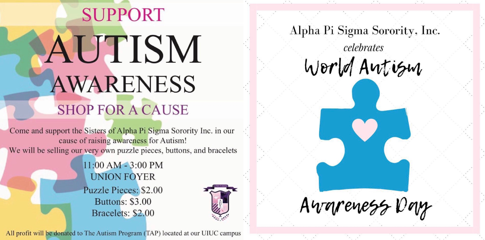

Alpha Pi Sigma

I joined Alpha Pi Sigma Sorority, Inc. my sophomore year in Spring 2017. I decided to undergo the academic process because I wanted to join a group of strong women. I wanted to be part of a group of women who empower each other to do and be better. I grew up around strong women, and I wanted to have that support and encouragement on campus. In addition, I wanted to find my home away from home. I did not like being far from my family, and I found myself really homesick after my first year, so I decided to look around to see which organization I fit in best. Once I finally met the sisters of APS, I knew I had found my sisterhood on campus. Everyone was very welcoming and supportive, which is what I was looking for on campus. I also really liked that their philanthropy was Autism Awareness. As a teacher, I have met a few students who have autism. The organization really prepared me for this part of my career and it also taught me how to be responsible, professional, and culturally aware.
Philanthropy
Our philanthropy is Autism Awareness. During the month of April, we host an event and a fundraiser for our philanthropy. All of the money collected i s donated to organizations that support this cause. This not only duns organizations that support children and adults who have autism, but we have helped spread awareness on and off campus.
scholarship

In our sisterhood, we want to make sure that we are able to help others. One way we do so is by creating our own scholarhsip. Through fundraisers and events each year, we are able to have this scholarship opportunity for U of I students.